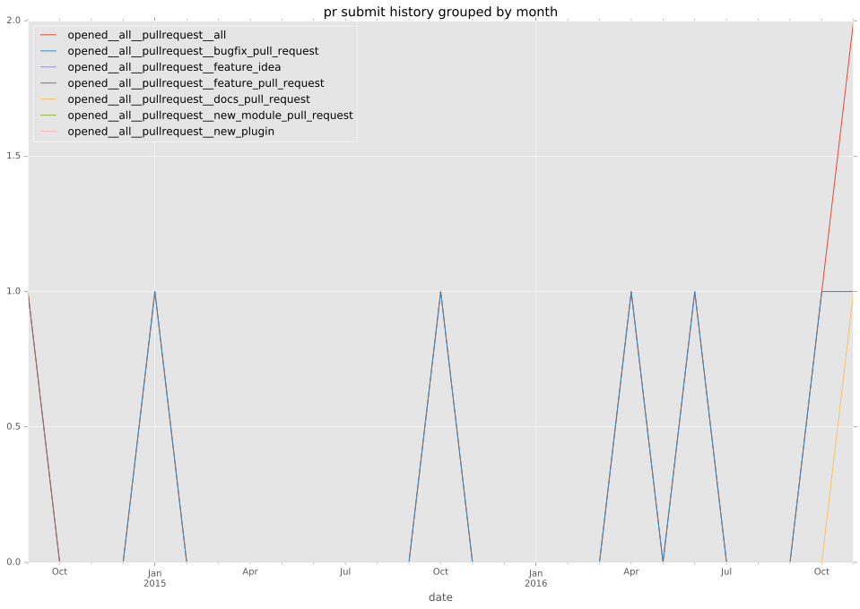
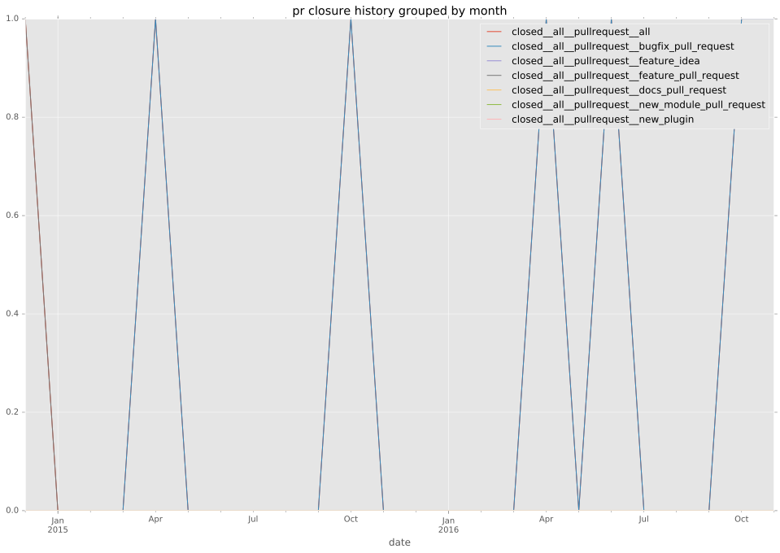

authors
- groks
maintainers
- groks
contributors
- abadger : 1 commits
- mscherer : 3 commits
- sivel : 9 commits
- bcoca : 3 commits
- resmo : 1 commits
- groks : 22 commits
- arno01 : 1 commits
- yuriks : 1 commits
- kubilus1 : 1 commits
- chris-l-weber : 2 commits
total issue counts
bugfix pull request: 6
feature pull request: 1
pullrequest: 7
issue: 5
bug report: 5
issue history
pullrequest history


days open by issue type
feature pull request
count: 2
std: 0.0
min: 63
max: 63
median: 63.0
mean: 63.0
all
count: 19
std: 43.5358291646
min: 0
max: 157
median: 4.0
mean: 25.4210526316
pullrequest
count: 0
std: nan
min: nan
max: nan
median: nan
mean: nan
bugfix pull request
count: 12
std: 31.2332379288
min: 0
max: 82
median: 2.0
mean: 15.3333333333
issue
count: 0
std: nan
min: nan
max: nan
median: nan
mean: nan
bug report
count: 5
std: 68.773541424
min: 0
max: 157
median: 0.0
mean: 34.6
closures grouped by total days open